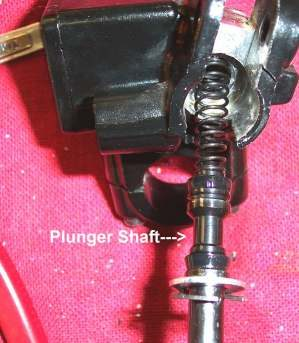
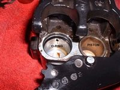
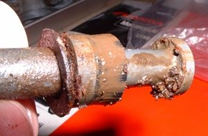

You see wet or crusty fluid on a hose fitting, caliper, under the brake lever, on the wheel or on the ground, or the reservoir level keeps dropping. Brake fluid is clear to brown and feels slippery; it is not oil. Any leak lets pressure out and air in, and fluid on the pads ruins them.
Is it safe to ride?
No. A leaking brake can fail without warning.
Quick checks first
- Wipe everything dry, squeeze the lever and press the pedal hard for a minute, then look again.
- Look at the reservoir level in each reservoir, including the CBS reservoir.
- Look at the pads: are they wet or dark?
- Check paint near the leak: brake fluid blisters paint.
Diagnose it step by step
1Where is the fresh wetness? Follow it upward to the highest wet point.
- At a banjo bolt or bleed nipple: go to step 2.
- On a hose or metal pipe: go to step 3.
- Under the lever, at the lever boot or at the rear master cylinder: go to step 4.
- At a caliper piston or between caliper halves: go to step 5.
- At the CBS unit (K-Light 125 type): go to step 6.
2Banjo bolt or bleed nipple.
- Fit new sealing washers on both sides of the banjo and tighten to the model torque (K-Light 125: 30 N·m). Do not over-tighten a leaking banjo or nipple. Then bleed: Replace brake fluid and bleed the brakes.
3Hose or pipe cracked, rubbed or swollen.
- Replace it; do not tape or patch it. See Check brake hoses and banjo bolts. Then bleed.
4Lever or master cylinder.
- The cups are worn or the reservoir cap seal has failed. Check the cap diaphragm and cap first (Check brake fluid level and condition); if dry there, Check the brake master cylinder. Workshop.
5Caliper.
- A piston seal is leaking. Rebuild a brake caliper and fit new pads: Replace disc brake pads. Workshop.
6CBS unit or its pipes.
- Check a combined braking system (CBS). The K-Light 125 manual describes a fail-safe setting of the CBS adjusting bolt that lets the rear brake work alone when the linked front circuit leaks. It is a workshop measure to move the bike, not a repair.
7After the repair, is the lever firm and the level steady after a week?
- Yes: fixed.
- No: recheck all joints; a second leak is common on old systems.
Clean spilt fluid off paint and tyres at once with plenty of water. Fluid on a tyre makes it slippery.
Causes, most likely first
| Cause | How to confirm | Fix |
|---|---|---|
| Old banjo sealing washers | Crust or wet at banjo | New washers, tighten, bleed |
| Loose or damaged bleed nipple | Wet at nipple | Tighten to model torque or replace, bleed |
| Cracked or rubbed hose | Damage seen when bent | Replace hose, bleed |
| Caliper seal | Wet at piston, oily pads | Rebuild a brake caliper |
| Master cylinder cup or cap seal | Wet under lever or at cap | Check the brake master cylinder |
| CBS unit seal | Wet at CBS unit | Check a combined braking system (CBS) |
Reference values (K-Light 125)
| Item | Value | Source |
|---|---|---|
| Brake hose banjo bolt | 30 N·m | K-Light 125 manual, PDF p. 64 |
| Fluid | DOT4 | K-Light 125 manual, PDF p. 65 |